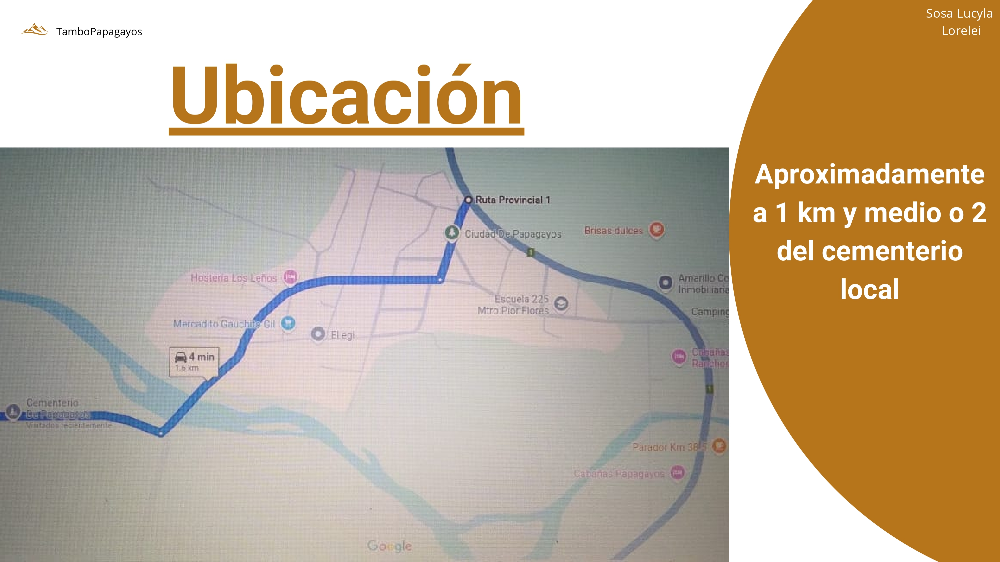

Tambo El Caranday
Tradición y calidad
Conocé másTradición y calidad
Conocé más“Tambo El Caranday” es un emprendimiento rural ubicado en la localidad de Papagayos, San Luis, dedicado a la producción artesanal de leche y derivados lácteos. Su propósito es rescatar la tradición del trabajo rural, impulsar el desarrollo local y ofrecer productos elaborados con calidad y respeto por la naturaleza.
El nombre hace referencia al caranday, una palmera autóctona que representa la vida, la identidad regional y el equilibrio con el entorno.

Natural, pura y recién ordeñada, ideal para consumo diario.
Elaborados con técnicas tradicionales que conservan el sabor del campo.
De textura suave y sabor auténtico, elaborado con paciencia y amor.
Elaborados con leche pura y fermentos naturales, sin conservantes.
El tambo se encuentra a unos 2 km del cementerio de Papagayos, rodeado de naturaleza, con acceso por caminos rurales desde la Ruta Provincial N°1.
📍 Papagayos, San Luis - Argentina
📞 +54 2664 000000
✉️ tamboelcaranday@gmail.com